멸치
맑고 짭짤한 국물
국물용 큰 멸치를 머리째 약한 불에 볶아 곱게 갈았습니다. 비린 맛은 볶을 때 날아가고 구수한 맛이 남습니다. 면은 칼국수처럼 얇게 뽑았습니다.
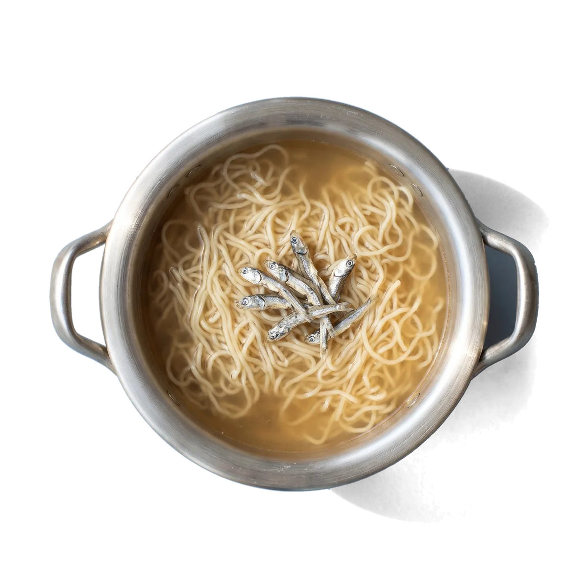
- 물
- 600ml
- 끓이는 시간
- 3분 30초
- 면 두께
- 1.6mm
- 맵기
- 맵지 않음
- 열량
- 455kcal
- 스프 속 멸치
- 65%
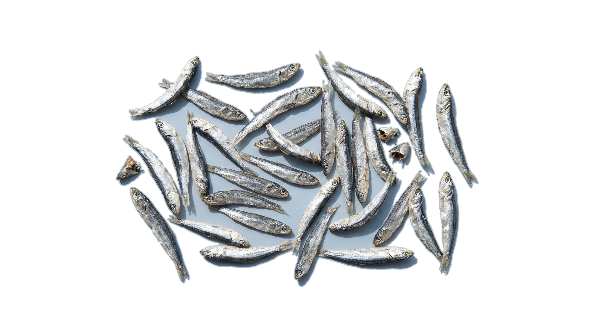
12월 1일 출시
정제소금, 간장분말, 설탕, 포도당, 쇠고기맛 베이스, 효모추출물, 마늘분말, 양파분말, 고춧가루, 후추분말, 생강분말, 표고버섯분말, 육수분말, 볶음양념분말, 혼합간장분말, 사골추출분말, 멸치추출분말, 다시마추출분말, 파분말, 칠리추출물, 조미양념분말, 덱스트린, 향미증진제, 카라멜색소, 파프리카추출색소, 산도조절제
스물여섯 가지
멸치 65%천일염간장설탕
네 가지
스프에 재료를 많이 넣을수록 맛은 둥글어지지만, 어느 라면을 끓여도 비슷한 맛이 납니다. 제맛 스프에는 재료가 하나뿐입니다. 멸치는 볶아서 갈고, 고추는 씨째 볶고, 대파는 숯불에 그을리고, 후추는 볶아서 부숩니다.
맑고 짭짤한 국물
국물용 큰 멸치를 머리째 약한 불에 볶아 곱게 갈았습니다. 비린 맛은 볶을 때 날아가고 구수한 맛이 남습니다. 면은 칼국수처럼 얇게 뽑았습니다.


얼큰하고 깔끔하게 매운 국물
햇볕에 말린 붉은 고추를 씨째 볶아 반은 가루로, 반은 기름으로 넣었습니다. 매운맛이 먼저 오고 단맛은 거의 없습니다. 굵은 면이 국물을 덜 먹어 끝까지 꼬들합니다.
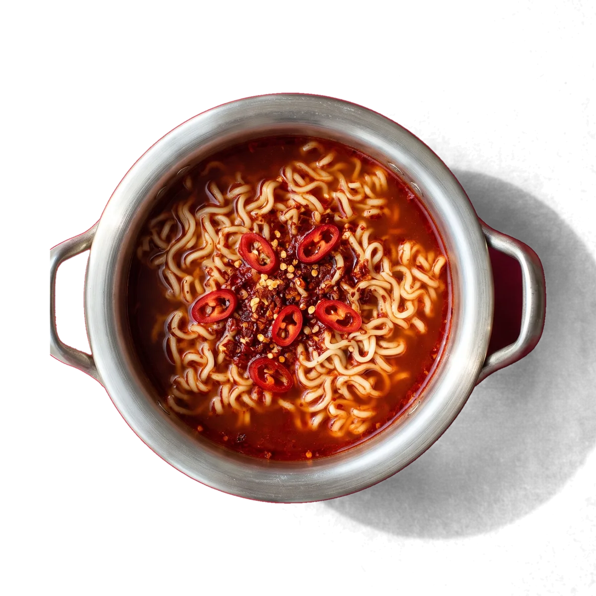
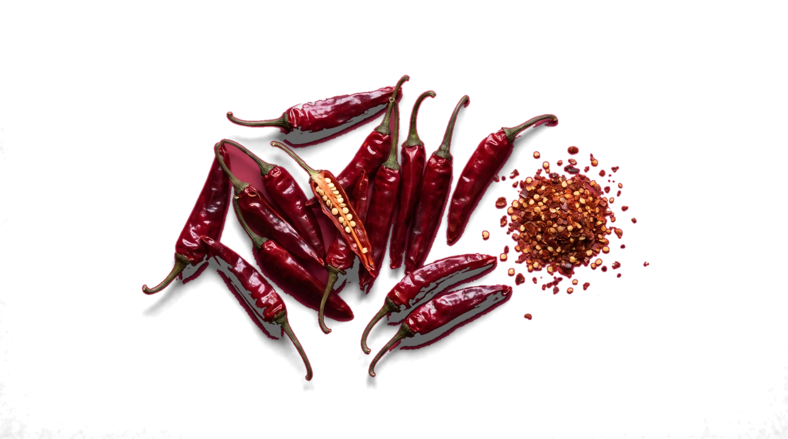
불 향이 나는 국물
대파를 숯불에 그을린 뒤 기름에 우렸습니다. 국물 위에 뜨는 파기름이 맛의 대부분입니다. 건더기도 대파뿐이고, 한 봉에 대파 반 대가 들어갑니다.
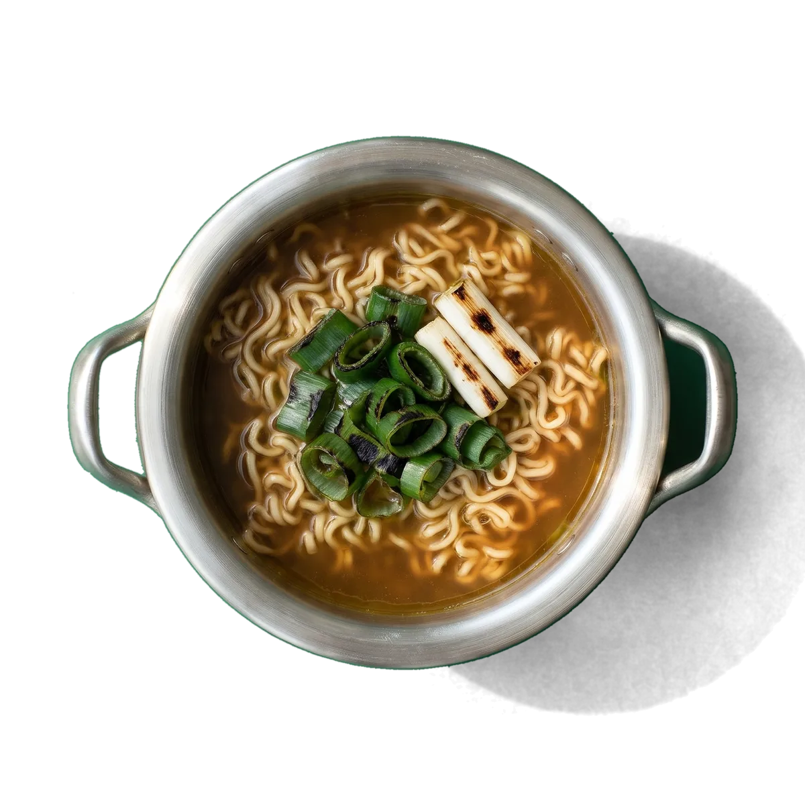
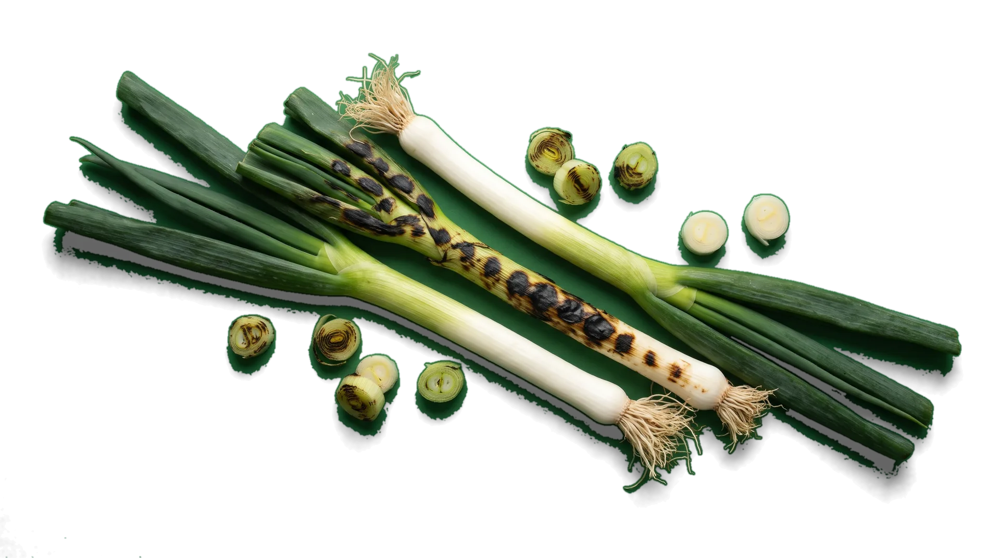
고추 없이 매운 국물
통후추를 볶아 굵게 부쉈습니다. 혀끝이 아니라 목에서 맵고, 먹다 보면 땀이 나는 매운맛입니다. 후추는 조금만 넣어도 세서 스프 속 비율이 가장 낮습니다.
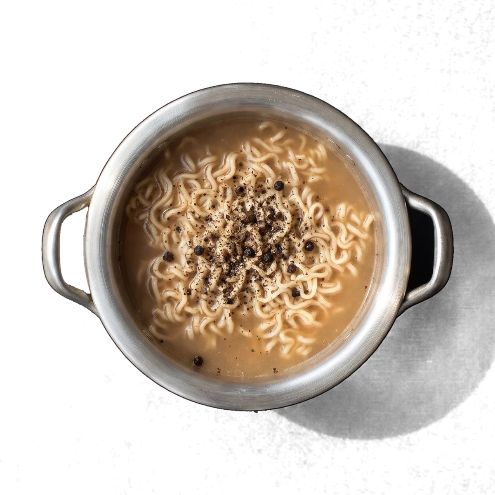
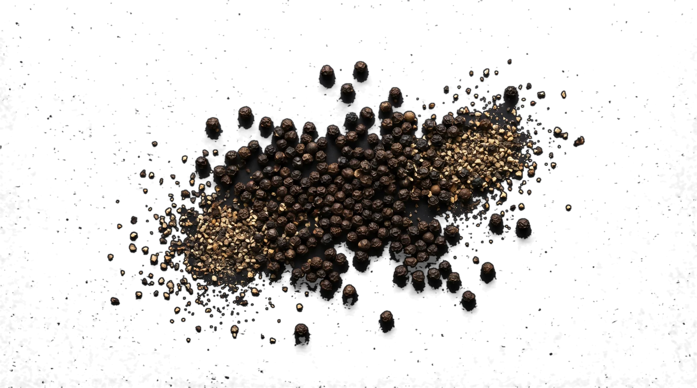
진열대에서 세 걸음 떨어져도 무슨 라면인지 읽히게 만들었습니다. 사진도 그림도 넣지 않았습니다. 바탕색은 재료에서 땄고, 글자는 그 위에서 가장 잘 읽히는 색 하나만 씁니다. 봉지 앞면은 가로 200mm, 세로 150mm입니다.
멸치 바탕 #A8BCCB. 국물용 마른 멸치의 등 색입니다.
고추 바탕 #B3112E. 햇볕에 말린 붉은 고추의 색입니다.
대파 바탕 #2A7536. 대파 잎 끝의 짙은 초록입니다.
후추 바탕 #141516. 볶은 통후추의 검정입니다.
봉지 뒷면에 적힌 그대로입니다. 아래는 고추 기준이고, 물과 시간은 맛마다 조금씩 다릅니다.
550ml
종이컵으로 세 컵 남짓입니다. 눈대중으로 부으면 국물이 짜지거나 싱거워지니, 한 번은 재 보세요.
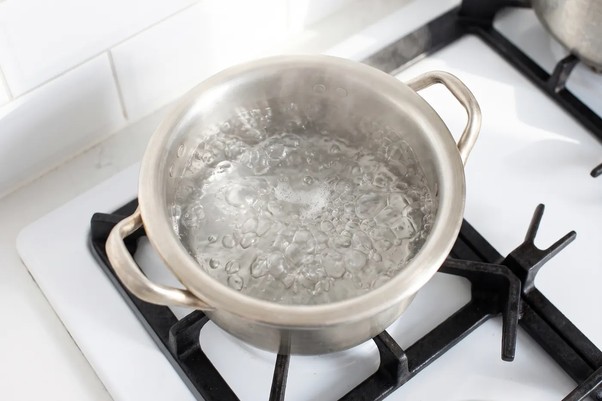
0:00
물이 끓으면 면, 분말 스프, 고추기름을 같이 넣고 시간을 잽니다. 처음 1분은 젓지 말고 두세요. 면이 풀리면서 고르게 익습니다.
2:00
고추와 후추는 계란을 풀어도 좋습니다. 멸치와 대파는 풀지 않아야 국물이 맑게 남습니다.
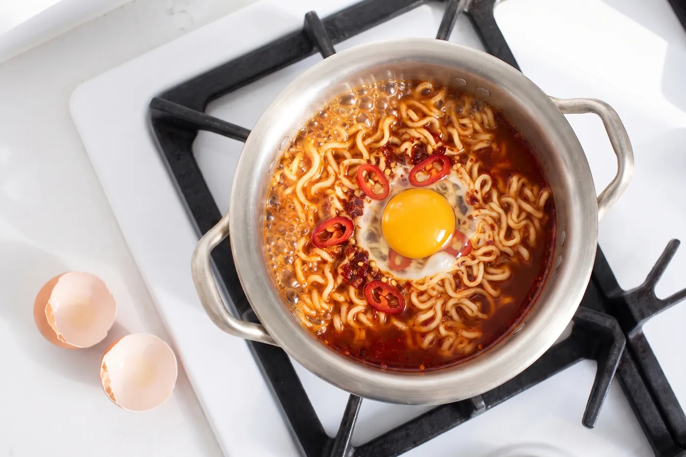
4:30
꼬들한 면이 좋으면 30초 일찍, 푹 퍼진 면이 좋으면 30초 늦게 끄세요. 그릇에 옮기지 않고 냄비째 먹어도 맛은 같습니다.
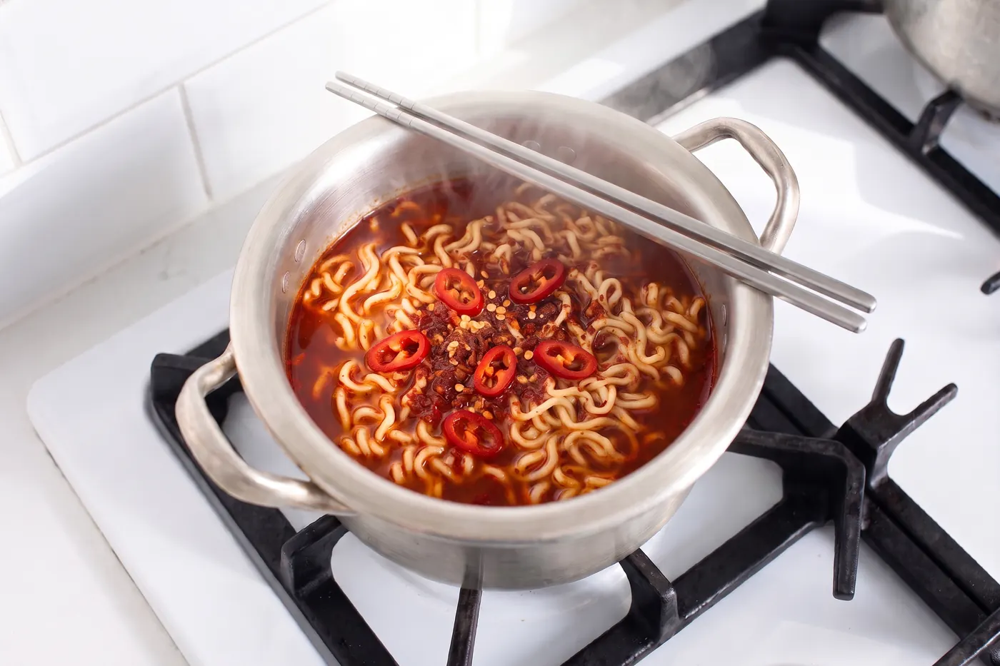
맛과 면 상태를 고르고, 면을 넣는 순간 시작하세요. 다른 탭으로 옮겨 가도 시간은 맞게 갑니다.
4:30
고추, 물 550ml. 4분 30초를 잽니다.
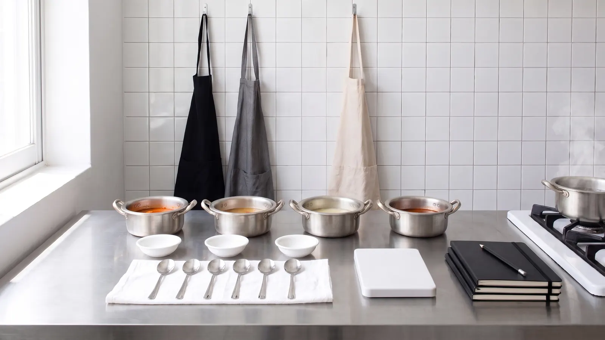
2024년 봄부터 두 해 동안, 냄비 네 개를 나란히 올려놓고 같은 라면을 물 양과 시간만 바꿔 끓였습니다. 재료를 하나씩 빼 보다가 하나만 남겼을 때 맛이 가장 또렷했습니다. 1,900봉의 맛은 공책 세 권에 적혀 있습니다.
매달 마지막 토요일 오후 2시부터 5시까지 문을 열고, 나오기 전의 맛을 먼저 끓여 드립니다. 12월은 출시 준비로 한 번 쉽니다.
김오름시 냄비골길 14, 2층
가상 서비스입니다. 실제 주소가 아닙니다.
12월 1일부터 동네 마트와 편의점에서 팝니다. 처음 석 달은 김오름시와 그 둘레 가게에 먼저 들어가고, 다른 지역은 봄부터 늘려 갑니다. 가까운 가게에 없으면 제맛 온라인 가게에서 사세요. 오후 3시까지 주문하면 그날 보냅니다.
가상 브랜드라 실제로 팔지 않습니다.
넣으세요. 2분에 넣는 게 가장 좋습니다. 고추와 후추는 풀어도 되고, 멸치와 대파는 풀지 않아야 국물이 맑습니다.
물론입니다. 다만 처음 한 봉은 그대로 끓여 보세요. 재료 하나가 어떤 맛을 내는지 알고 나면 무엇을 더할지 고르기 쉽습니다.
봉지마다 물 양을 50ml 단위로 맞췄습니다. 싱겁게 드시려면 50ml만 더 넣으세요. 100ml를 넘기면 재료 맛이 흐려집니다.
2027년 봄에 멸치와 고추부터 나옵니다. 컵에서 4분 안에 익도록 면을 1.4mm로 더 가늘게 뽑고 있습니다.
멸치는 멸치 맛, 고추는 고추 맛. 재료마다 제 맛이 나야 한다는 뜻입니다.